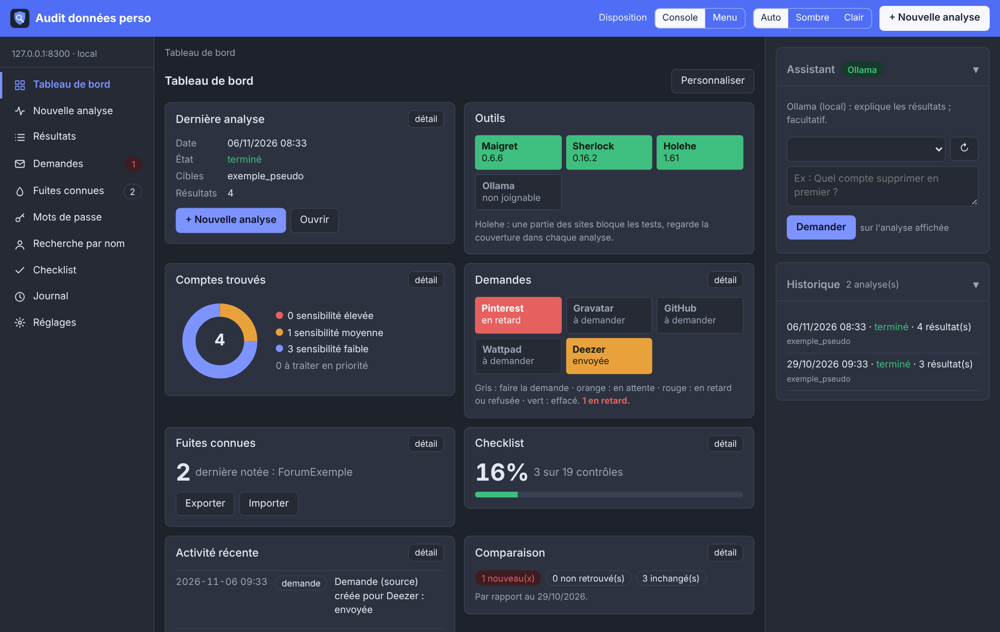
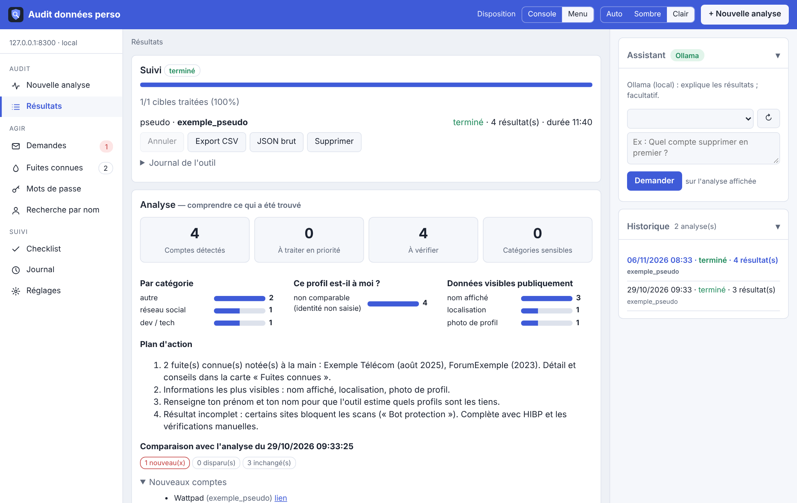
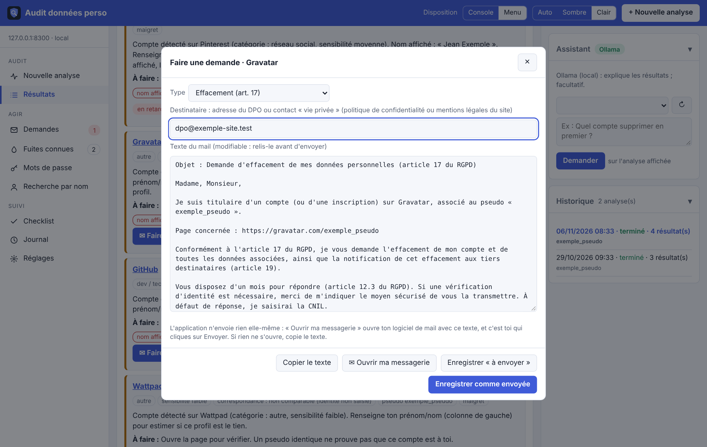
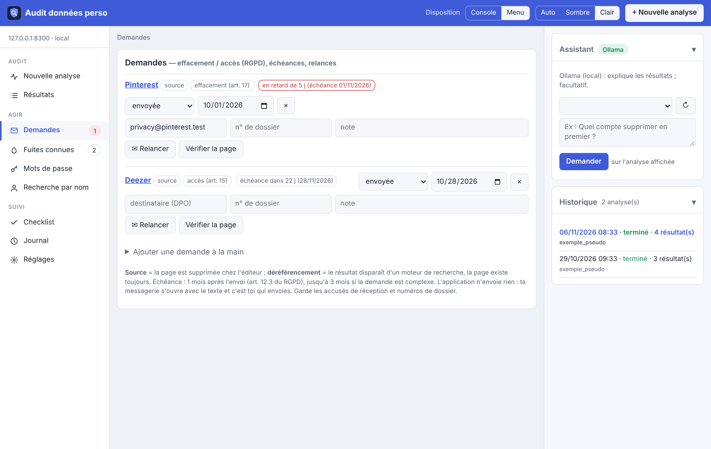
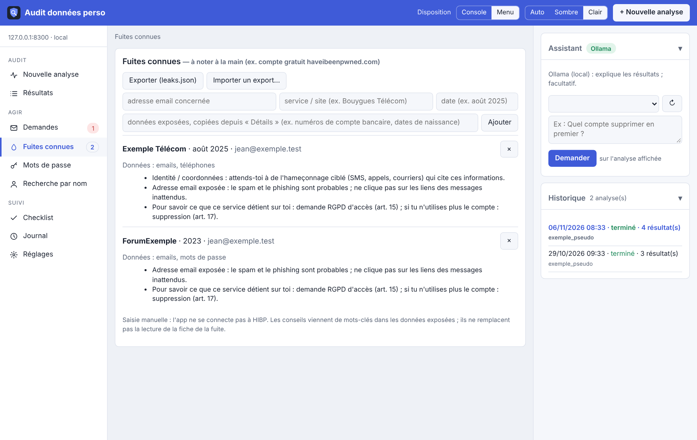
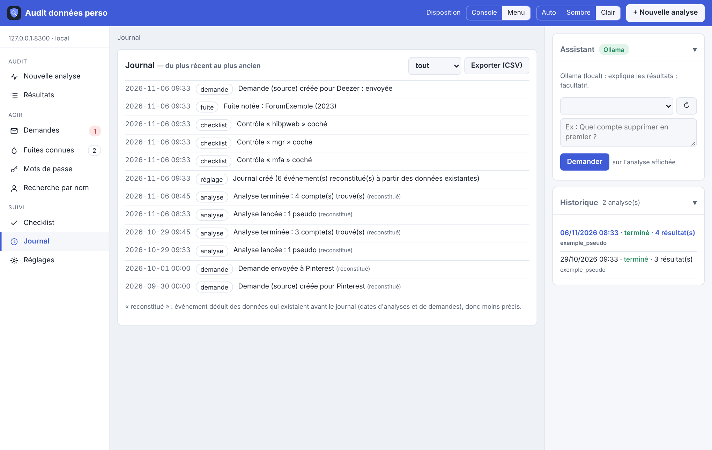
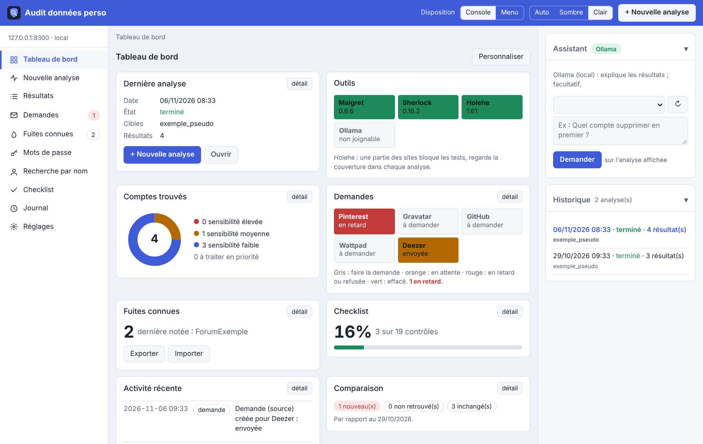

Application locale pour auditer tes propres données : comptes liés à tes pseudos et adresses email, fuites connues, demandes de suppression RGPD et leur suivi.
Usage strictement personnel. Uniquement sur tes pseudos, tes adresses et ton nom. Jamais pour chercher des informations sur une autre personne.

Trouver, supprimer, revérifier : les trois étapes d'un nettoyage de ses données, au même endroit.
Maigret et Sherlock pour les pseudos (des milliers de sites), Holehe pour les emails. Plusieurs cibles à la fois, une analyse à la fois.
Progression par cible, durée maximale par outil avec résultats partiels conservés, annulation possible.
Catégorie et sensibilité de chaque compte, « est-ce moi ? », données visibles publiquement, plan d'action.
« Faire une demande » prépare un mail type (art. 15, 17 ou les deux) et ouvre ta messagerie. Ensuite, « Suivre la demande ».
Un mois après l'envoi (art. 12.3), relance préparée sur le même modèle. Jamais envoyée automatiquement.
Saisie à la main (compte gratuit haveibeenpwned.com), conseils selon les données exposées, export et import de la liste.
Test Pwned Passwords : l'empreinte est calculée dans ton navigateur, seuls 5 caractères sont envoyés.
Nouveaux comptes, comptes non retrouvés, inchangés, par rapport à l'analyse précédente.
Liens de recherche pré-remplis (moteurs, annuaires, réseaux), à ouvrir toi-même.
Chronologie de tout ce qui a été lancé et fait, et 19 contrôles manuels à cocher.
Mode sans interface avec rapport, et minuteur systemd facultatif.
Un Ollama local explique les résultats. Sans lui, tout le reste fonctionne.
Deux dispositions au choix (Console ou Menu), thème sombre ou clair, assistant et historique repliables à droite.
Lance une analyse, puis lis les résultats du plus important au moins important.

Sur chaque compte, un bouton « Faire une demande ». Le texte est modifiable, le destinataire à renseigner, et c'est toi qui envoies.

Chaque demande a son statut, sa date d'envoi et son échéance. Une demande en retard se relance en un clic.

Note tes fuites connues, exporte-les, réimporte-les sur un autre poste. Le journal garde la trace de chaque action.


La console se réorganise : glisse les tuiles, masque celles dont tu n'as pas besoin. Le thème clair est là aussi.

L'interface n'écoute que sur 127.0.0.1. Aucune télémétrie. Tes données restent dans un dossier que tu choisis (~/osint par défaut).
Linux. Le plus simple : l'AppImage, un seul fichier qui embarque Python et les outils. Chrome, Chromium, Brave ou Edge est nécessaire pour la fenêtre autonome.
chmod +x audit-donnees-perso-x86_64.AppImage ./audit-donnees-perso-x86_64.AppImage # serveur seul : --serve # icône du menu : --install-launcher
À télécharger dans les releases du dépôt. Sur Ubuntu 22.04 et Zorin, installe libfuse2.
python3 -m venv venv && source venv/bin/activate pip install fastapi uvicorn maigret holehe sherlock-project python audit_donnees_perso.py # puis http://127.0.0.1:8300
Python 3.10 ou plus.